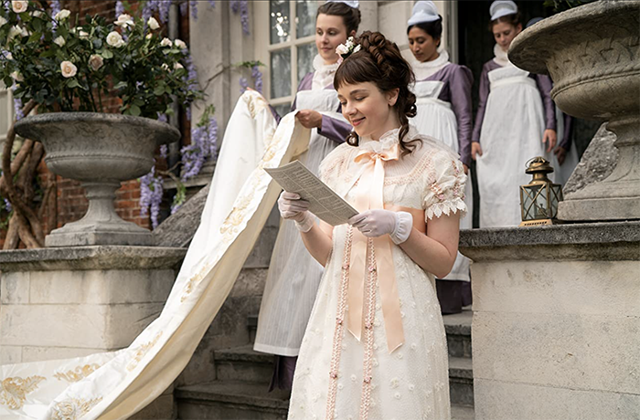

Meet the Ladies
Young, beautiful, and naive, the ladies of the ton are coming out to society in a way they could have never imagined. With expectations of meeting their future husband, these ladies have a monumental decision to make. With the aid of their mothers, brothers, and sometimes the queen, they hope to find a match, not necessarily for love, but for a title, fortune and fame.
Daphne Bridgerton
Daphne is the most favored debutante in the ton. Even the Queen has taken a liking to her. From a middle-aged suitor, a meddling brother, a caring prince, and the mysterious duke, Daphne has her hands full.

Marina Thompson
Cast upon the Featherington family, Marina also comes with a secret. She takes the fancy of several men, including Mr. Featherington and Colin Bridgerton. Her heart, however, lies with a soldier.

“Which young ladies might succeed at securing a match?”
- Lady Whistledown
Penelope Featherington
As a sweet-natured young girl, she is the target of ruthless hurlings from her sisters. Those who truly know Penelope, remain her dear friends. As Eloise’s best friend, Penelope spends a fair amount of time with Colin Bridgerton and eventually develops romantic feelings.

Eloise Bridgerton
Full of curiosity and ambition, Eloise has no intent to find a husband and pursues a life of friendship. Her observant nature thrusts her into a hunt to find the true Lady Whistledown. Although, if she’s not careful, her search may reveal something she’d be horrified to know.
